Рогалик про дев’ятиповерхівку на механічних ногах, її мешканців і місто, яке щоразу повертається до 04:17. Ти керуєш будинком, збираєш нову зброю, рятуєш сусідів, розставляєш їх по квартирах і б’єшся з машинами: сам, удвох на одному екрані або з другом по мережі. Цей путівник пояснює керування, правила, прогрес і режими без жодних сюжетних спойлерів.
Відкрий гру: ти потрапиш у Притулок (хаб). Угорі блок «Хто грає?» з трьома режимами: «Сам», «Вдвох тут» (один екран) і «Вдвох по мережі» (кімната з кодом). Нижче «Твоя місія», кнопка «Вирушити в рейд» (якщо рейд уже триває, вона зветься «Продовжити рейд») і рядок «Голова: … змінити», де обирають героя та складність.
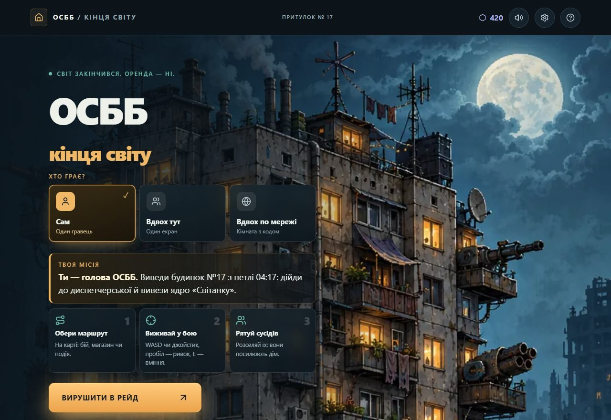
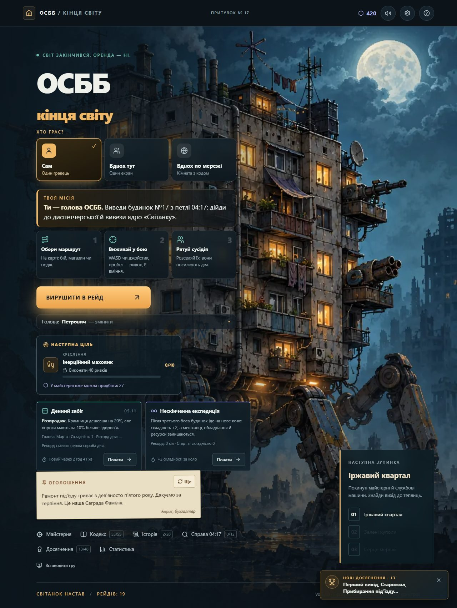
Глибше в Притулку: «Наступна ціль» (що ти відкриєш далі), картки режимів («Денний забіг», «Нескінченна експедиція»), дошка оголошень із жартами сусідів і кнопки «Майстерня», «Кодекс», «Історія», «Справа 04:17», «Досягнення» та «Статистика».
Герой обирається в рядку «Голова: … змінити». На початку відкритий лише Петрович, решту відкривають повні експедиції (див. розділ 9). Під вибором видно його вміння на клавіші E та обирається складність (0–10).
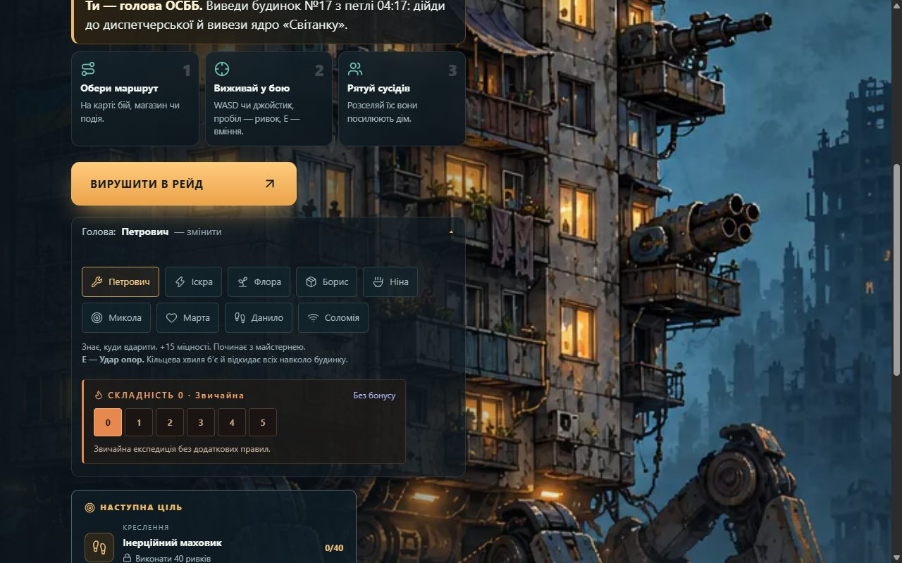
| Рух | Ривок | Вміння героя | Пауза | |
|---|---|---|---|---|
| Клавіатура | WASD або стрілки | Пробіл | E | P або Esc |
| Телефон | постав палець будь-де на арені: під ним з’явиться джойстик (є й постійний «РУХ» у лівому нижньому куті) | кнопка «РИВОК» | кнопка вміння праворуч (на малюнку «УДАР») | кнопка «Пауза» вгорі праворуч |
| Геймпад | лівий стік або хрестовина | A чи правий тригер | B чи правий бампер | Start |
| Другий гравець на одному екрані | стрілки | / | . | як у першого |
Будинок стріляє сам: ти лише рухаєшся, збираєш здобич і вирішуєш, коли вдарити ривком чи вмінням. Перезарядка вміння в усіх героїв однакова: 12 секунд (перк «Короткий гніт» скорочує її на 3 с за рівень). Вона видна на кнопці. Гра автоматично ставить паузу, коли вікно втрачає фокус.
Під час заставки боса чи міні-боса бій стоїть: торкнись екрана, натисни Space, E або Enter, і заставка скоротиться (не раніше, ніж через півсекунди).
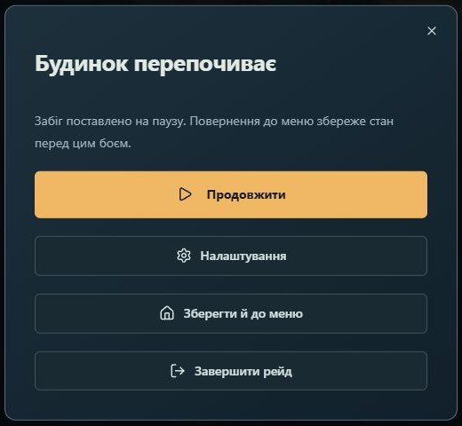
Кожна з трьох локацій (Іржавий квартал, Зелені куполи, Серце мережі) має карту на 10 кроків. Це випадкове дерево: 38–49 кімнат, на кожному кроці 3–6 вузлів, шляхи розгалужуються й зливаються, наприкінці бос. Натисни вузол, щоб побачити, що в ньому, а потім «Рушити сюди». Вибір відсікає інші гілки наступного кроку, тож маршрут треба планувати.
| Кімната | Що там |
|---|---|
| Бій | розбий загін: три хвилі й ватажок; нагорода: модуль, монети й брухт |
| Еліта | загін без передишок: хвилі накочуються одна на одну, стрільці цілять на випередження; вищий шанс на рідкісний модуль |
| Мінібос | окремий сильний ворог зі своїми атаками; за перемогу предмет на вибір, монети й 4 брухту |
| Подія | зустріч, ризикована угода чи знахідка: ти вирішуєш, як діяти (36 подій кампанії; частина з втратою модуля чи меблів) |
| Скриня | рівно один випадковий предмет із повного каталогу: обладнання або меблі (удвох по знахідці кожному будинку) |
| Магазин | витрать монети на модулі або ремонт будинку |
| Перепочинок | віднови міцність або збери ресурси перед наступним боєм |
| «?» | невідома кімната: може бути бій, еліта, магазин, подія, перепочинок, скриня чи мінібос; результат відкриється при вході |
| Бос | чекає на 10-му кроці; після перемоги історія продовжується й з’являється карта наступної локації |
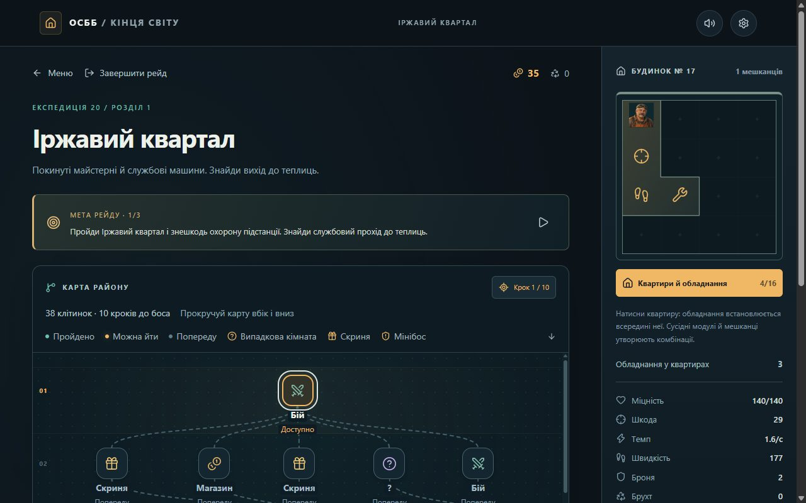
У бою ти бачиш: міцність будинку, годинник і назву загону вгорі, монети, рівень і шкалу досвіду, лічильник вбивств і серію (комбо). Збирай монети й брухт: що більший радіус збору (магніт), то менше бігати. Серія знищень без паузи понад 2,5 с підвищує монети до ×1,5.
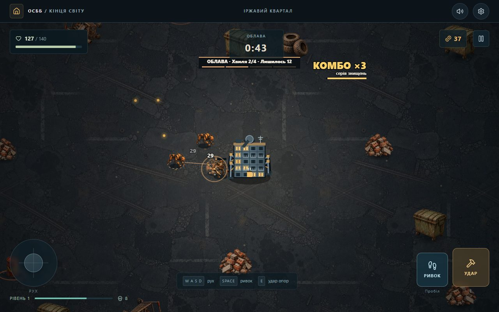
Коли шкала досвіду заповнюється, бій на мить зупиняється: три мешканці пропонують по одному перку. Перків 28, у кожного мешканця свої репліки; багато перків мають рівні (1/3, 2/3…). Перки діють до кінця експедиції. Удвох рівень спільний, а перк кожен обирає для свого будинку: на одному екрані по черзі, по мережі кожен на своєму пристрої. Обирай те, що доповнює твій набір: наприклад, «Рикошет» передає влучання наступному ворогові, а «Заклепки» додають броню. Клавіші 1–3, дотик і геймпад.
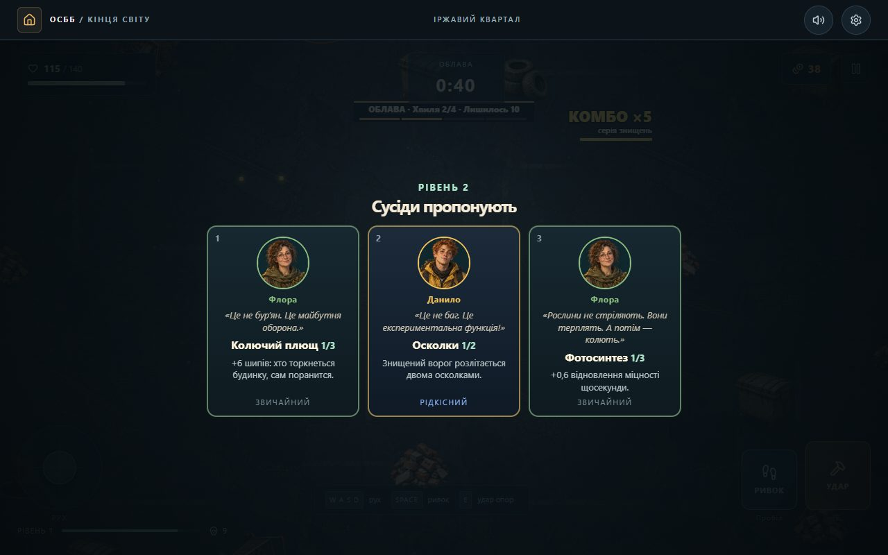
У кінці кожної локації чекає бос (на кожну локацію по три варіанти, випадковий). Перед боєм гра показує заставку: портрет у рамці, ім’я, місце, пораду «як перемогти» з описом атак, здоров’я лідера й репліку машини. Прочитай пораду: в ній пояснено, куди ступати. Мінібоси мають схожу, але коротшу заставку.
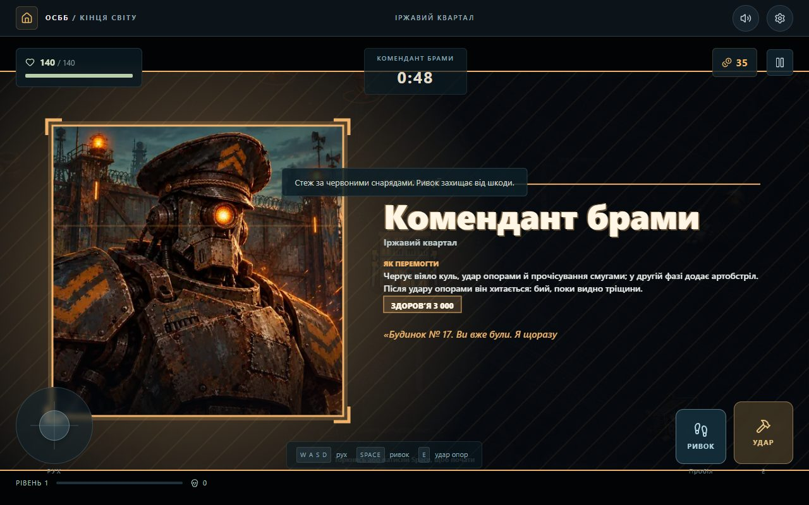
Бос має другу фазу з додатковою атакою. Коли він завдає важкого удару, він на мить оглушується й отримує більше шкоди: це найкращий момент для вміння.
У будинку живе дев’ятеро мешканців (одного з них ти граєш як голову). Врятованих після боїв і подій ти вселяєш у квартири плану поверху. Квартири фігурні: їх можна повертати, переставляти й об’єднувати. На телефоні квартиру тягнуть пальцем за портрет, а модуль, меблі чи мешканця зі списку піднімають коротким утриманням і несуть на план. План починається з 4×4 і під час рейду розширюється до 5×4, 5×5 і 6×6 за 200, 360 і 520 монет.
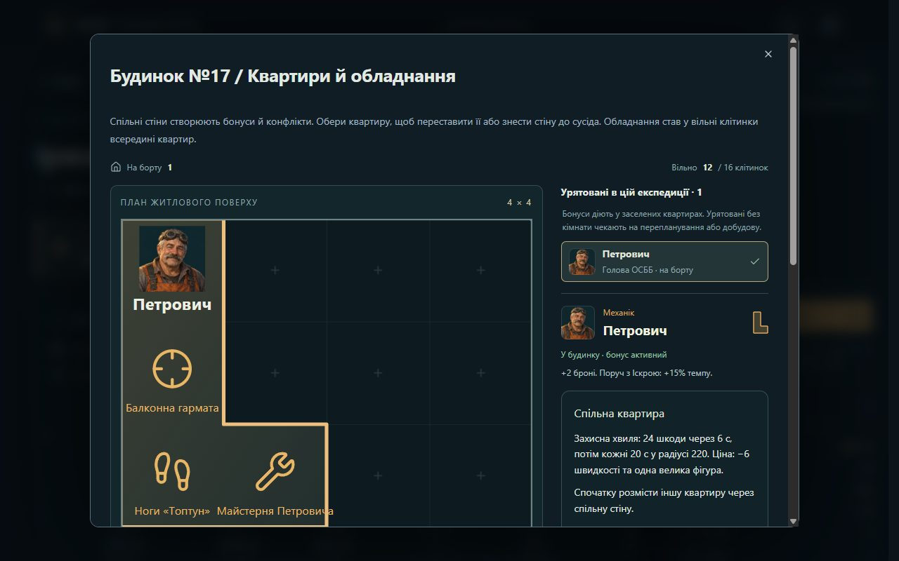
Перше ядро зброї за порядком гнізд озброює дах. Без ядра стріляє звичайна дахова гармата. Всього сім ядер. Якщо в сусідній клітинці лежить потрібний модуль, ядро еволюціонує (банер на початку бою). На картці ядра видно, який сусід потрібен.
| Ядро | Як стріляє | Еволюція | Потрібний сусід |
|---|---|---|---|
| Дробовик ЖЕК | віяло з п’яти дробин, ближній бій | Пральна картеч: сім дробин, що відкидають | Бойова пральня |
| Рейковий пробійник | повільний постріл крізь усю лінію | Гаус-рейка: кожен постріл критичний | Дід на балконі |
| Міномет з балкона | навісний снаряд у найгустіший натовп | Касетний міномет: після вибуху три малі бомби | Тесла на кухні |
| Дуговий трансформатор | миттєва блискавка, що перестрибує між трьома ворогами | Грозовий фронт: шість ворогів | Старий акумулятор |
| Монетомет | монети рикошетять тричі | Джекпот: ще один рикошет і +25% шкоди | Щасливий домофон |
| Газова колонка | струмінь полум’я впритул, вороги горять | Спалах спор: горіння вдвічі сильніше | Теплиця-хижак |
| Балконна ракетниця | повільна ракета, що наздоганяє ворога й вибухає по площі | Магнітний рій: дві ракети за залп | Магнітний пилосос |
Дев’ять голів ОСББ. Новий герой відкривається щоразу, коли ти проходиш повну експедицію (три локації й фінал): перший відкритий від початку, наступні після 1, 2, … 8 перемог. Кожен має особисте вміння на E (перезарядка 12 с), бонус і стартовий набір. Після першого рейду, виграного героєм, у Притулку розповідається його короткий епілог.
| Герой | Відкриття | Вміння на E | Бонус |
|---|---|---|---|
| Петрович, механік | з початку | Удар опор: кільцева хвиля б’є й відкидає всіх навколо | +15 міцності |
| Іскра, інженерка | 1 перемога | Розряд: блискавка між шістьма ворогами, оглушує їх | +15% темпу |
| Флора, ботанік | 2 перемоги | Цвітіння: лікує 12%, сповільнює й коле ворогів | +0,8 відновлення |
| Борис, комірник | 3 перемоги | Ревізія: забирає частку здоров’я ворогів, ×1,5 монет 5 с | +30 монет на старті |
| Ніна, кухарка | 4 перемоги | Окріп: усі навколо горять 3,5 с | +0,5 відновлення |
| Микола, вартовий | 5 перемог | Залп з даху: 16 куль на всі боки | +4 шкоди |
| Марта, медикиня | 6 перемог | Щеплення: два щити (до чотирьох) і 6% лікування | щит на початку кожного бою |
| Данило, кур’єр | 7 перемог | Експрес: скидає ривок, +40% швидкості на 4 с, мить невразливості | +20 швидкості |
| Соломія, радистка | 8 перемог | Глушилка: знищує ворожі снаряди поруч, оглушує двір | +60 дальності |
Кожна експедиція, навіть програна, приносить ядра: за пройдені локації, урятованих мешканців, міні-босів і бойові дані. У майстерні ти витрачаєш їх на креслення й модифікатори. Креслення розширюють список можливої здобичі (предмети не видаються на старті, а поточний рейд не змінюється); модифікатор купується один раз і діє в кожному наступному рейді.
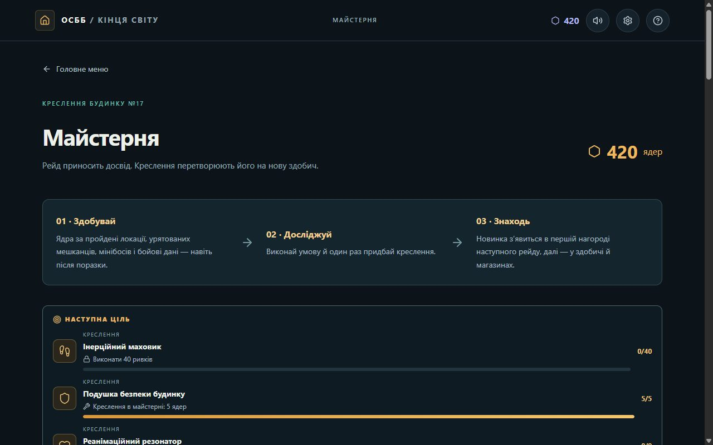
Кодекс показує всі предмети з умовами відкриття, рідкістю (звичайний, рідкісний, епічний, легендарний) і сімейством. Досягнення (48, частина секретних), статистика і «Наступна ціль» з’являються в Притулку.
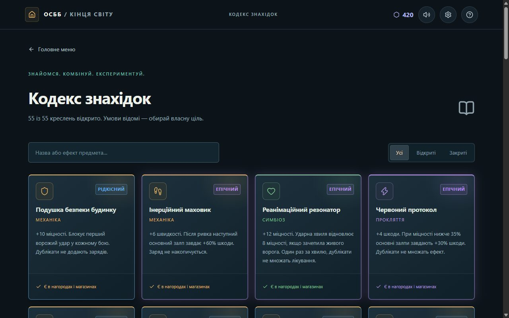
Історія розповідається діалогами з портретами мешканців і повністю озвучена (650 реплік, у кожного персонажа свій голос). Мета: вийти з петлі 04:17. Частина сцен відкривається по ходу рейдів, частина в Притулку між ними; після першої перемоги кожним героєм розповідається його короткий епілог. Усі сцени, що ти вже бачив, можна переглянути в «Історії». «Справа 04:17» збирає 12 доказів, від яких залежить, яку з чотирьох кінцівок ти зможеш обрати. Їх не розкрито тут навмисно.
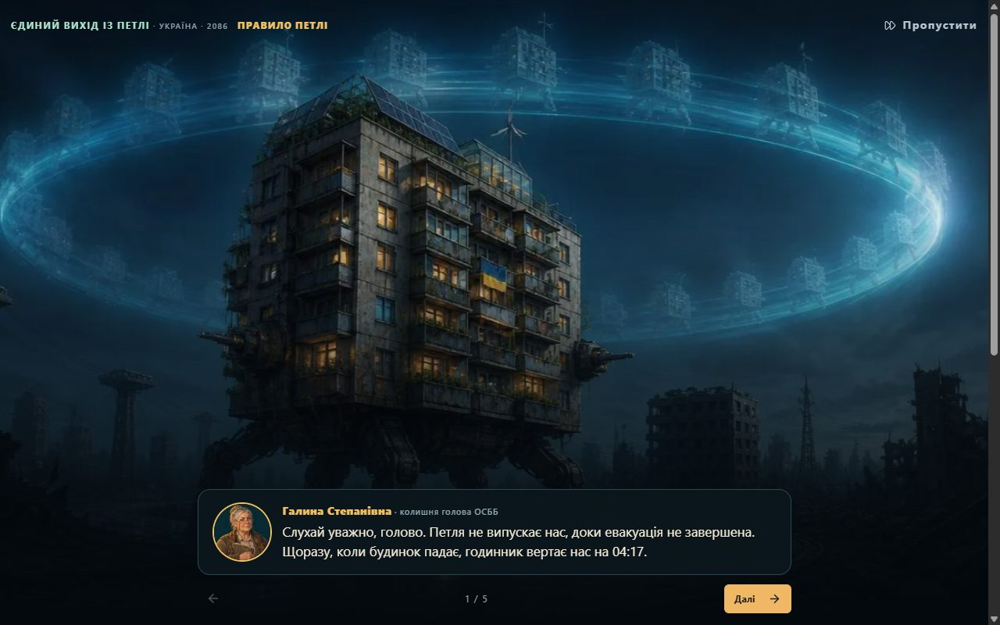
У Притулку обери «Вдвох тут»: з’являється вибір героя для другого гравця серед відкритих. Другий гравець керує другим будинком: він має свої ривок і вміння, а грає на стрілках (/ ривок, . вміння), другому геймпаді чи другому джойстику на екрані. Перший гравець грає як звичайно: WASD, Space, E. На новому рівні перк спершу обирає гравець 1, потім гравець 2, кожен для свого будинку.
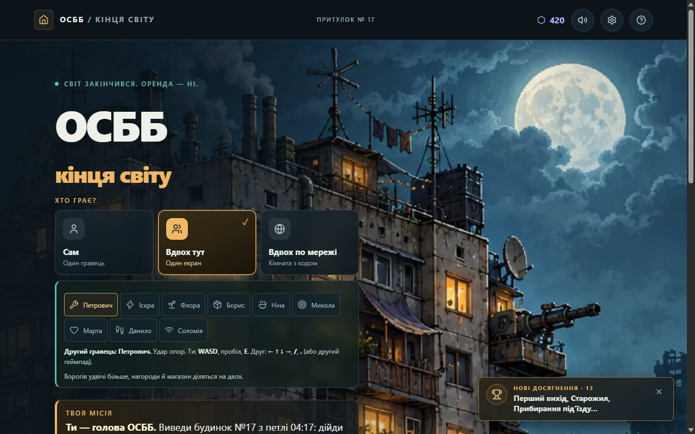
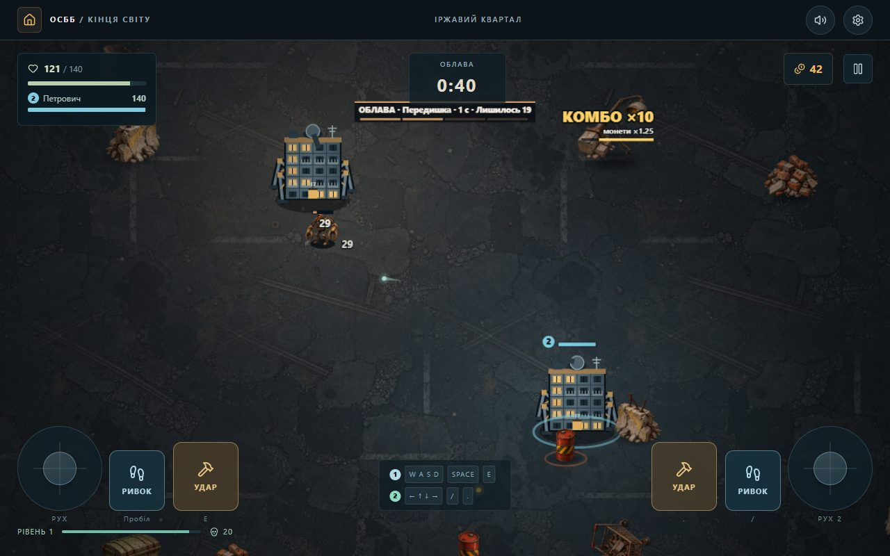
Двоє гравців на різних пристроях (ПК і ПК, ПК і телефон, телефон і телефон). Потрібен інтернет і однакова версія гри (її видно внизу Притулку). Версію оновлюють перезавантаженням сторінки; на телефоні встановлюють новий APK.
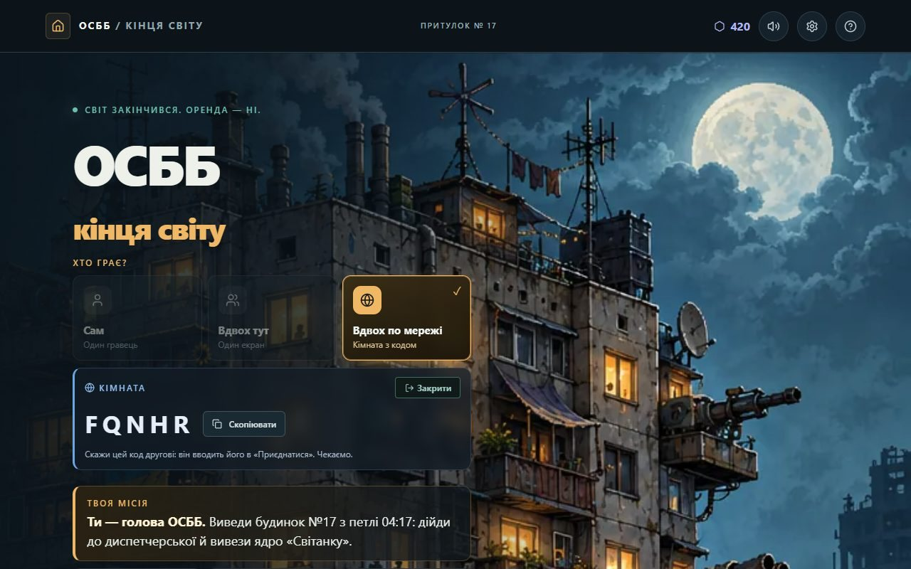
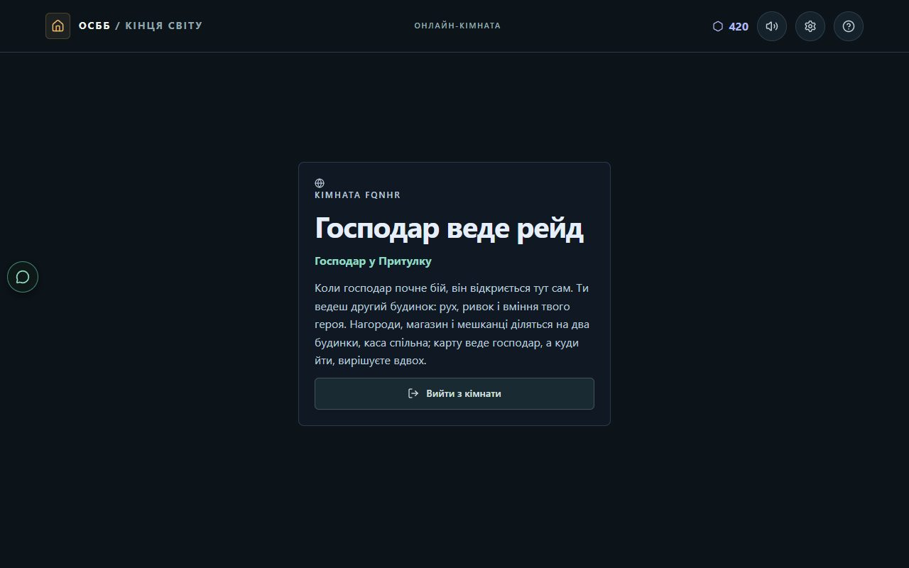
У «Як ділити бій» два способи: «Обидва рахують» (на кожному пристрої однакова симуляція, між ними ходять лише натискання) і «Хост рахує» (гість лише малює знімки; краще, коли зв’язок слабкий). Через резервний канал завжди «Хост рахує».
Гість грає за власний будинок зі своїми мешканцями, предметами й екраном квартир, а не за копію господаря. Нагорода має два ряди: «Ряд господаря» й «Для тебе: обери один». Кожен бере зі свого ряду, один гравець не може забрати два предмети, а обоє бачать, хто що обрав. Каса й магазин спільні (у магазині можна обрати: «Купувати для: Тебе / друга»); грошей удвічі більше. Меблі теж бувають у ряду гостя, і в нагороді, і в подіях. Ядер за рейд гість отримує стільки ж, скільки господар, а нові для себе сцени (зокрема сцени Притулку наприкінці рейду) бачить, навіть коли господар їх уже бачив.
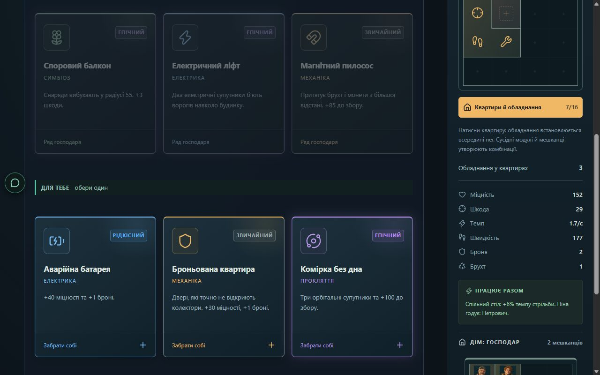
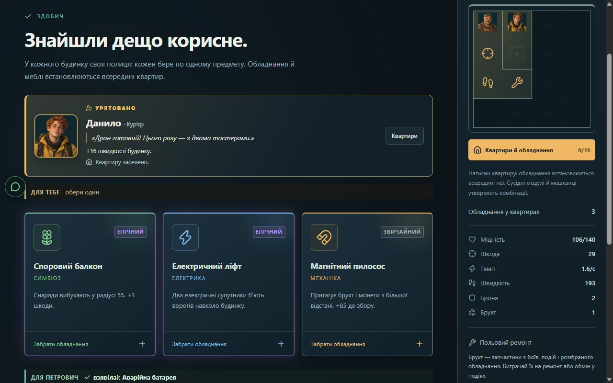
На кожному кроці карти обоє обирають вузол і натискають «Мій голос тут». Збіглися: вирушаєте туди. Розійшлися: вирішує монетка. Якщо гість мовчить 20 с, береться вибір господаря. Магазин, події й нагороду веде господар, але гість бачить їх у себе. Спільні зустрічі (6 подій, які одному не виконати) вимагають участі обох.
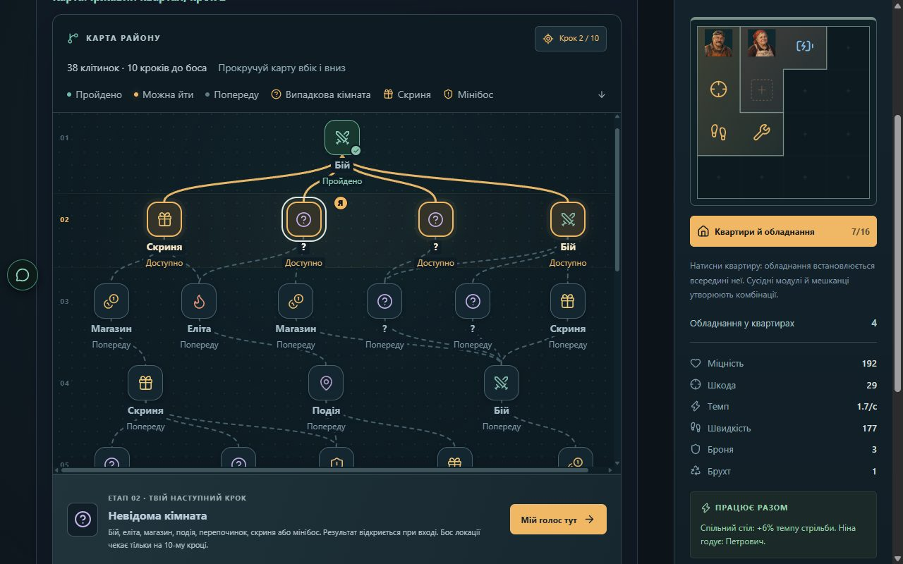
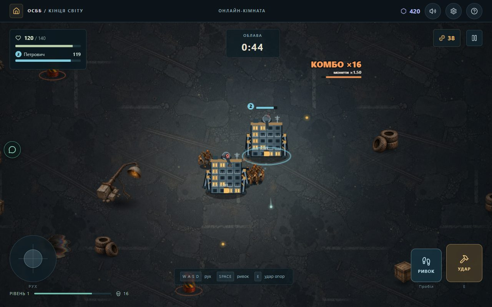
У кімнаті на кожному екрані зліва є кругла кнопка чату. Кнопку й панель можна перетягнути за смужку з назвою, щоб вона не затуляла гру; місце запам’ятовується, подвійний клік по смужці повертає чат на місце.
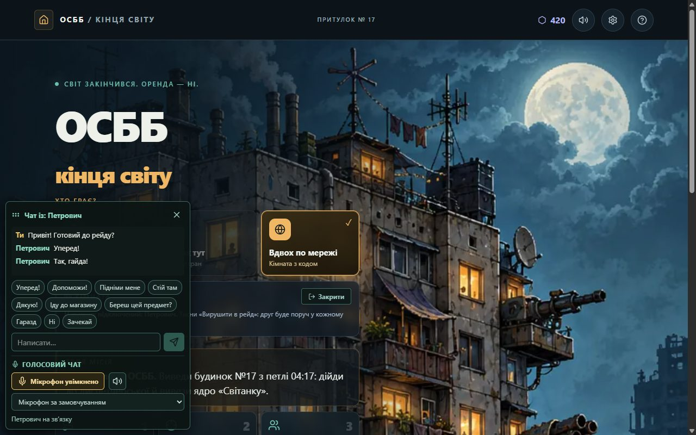
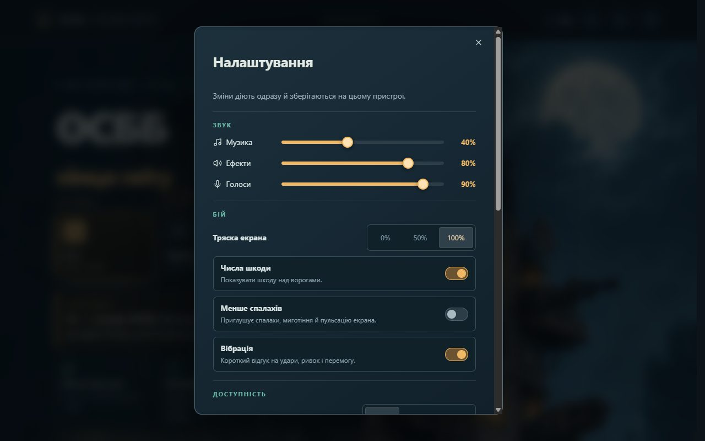
| Параметр | Що робить |
|---|---|
| Музика, ефекти, голоси | окремі повзунки гучності; кнопка вимкнення звуку є в шапці |
| Тряска екрана | 0, 50 або 100% |
| Числа шкоди | показувати чи ні шкоду над ворогами |
| Менше спалахів | приглушує спалахи, миготіння й пульсацію екрана |
| Вібрація | короткий відгук на удари, ривок і перемогу (на телефоні) |
| Розмір тексту | 100, 115 або 130%; весь інтерфейс масштабується |
| Лічильник кадрів | показує в бою кадри за секунду, найдовший кадр і якість картинки; на слабкому телефоні гра сама знижує якість і вмикає «ощадний» вигляд |
| Фільтр кольорів на весь екран | протанопія, дейтеранопія або тританопія; фільтр лежить на всьому екрані (меню, карта, бій, чат) і розводить за кольором те, що око цього типу плутає |
| Кольори для дальтоніків | окремий перемикач: контрастніші кольори снарядів, небезпечних зон і посилених ворогів у бою |
| Перенесення прогресу | код збереження OSBB1:… (копіювання або файл) і імпорт; перед імпортом поточний профіль зберігається як резервна копія |
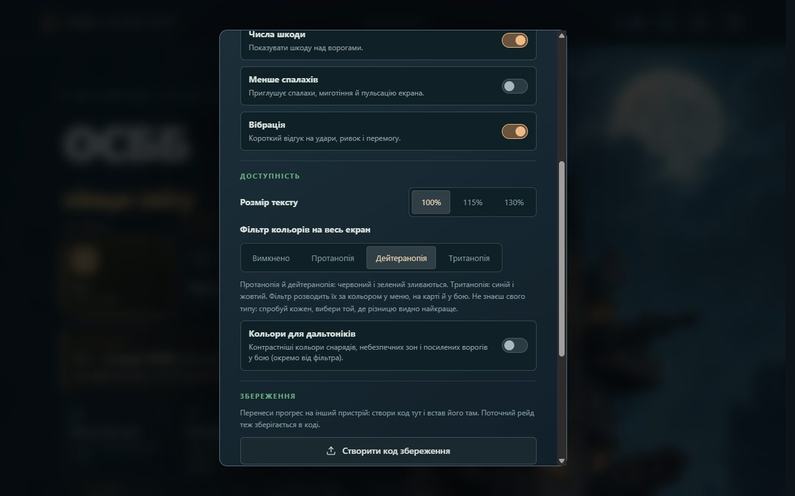
Прогрес зберігається в самому браузері чи застосунку, на одному пристрої. Щоб перенести його на інший, створи код збереження в налаштуваннях і встав його там.